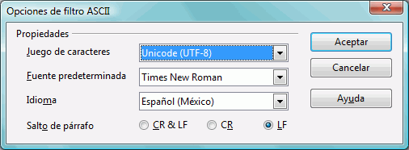

Glosarios
Los glosarios son archivos que se crean y actualizan manualmente para su uso en OmegaT.
Si un proyecto OmegaT contiene uno o varios glosarios, cualquiera de los términos en el glosario que también se encuentre en el segmento activo se muestran automáticamente en el Visor del glosario.
Utilización
Para utilizar un glosario existente, basta con colocarlo en el directorio /glossary después de crear el directorio de proyecto. OmegaT automáticamente detecta los archivos de glosario en este directorio cuando abre un proyecto. Los términos en el segmento activo que OmegaT encuentre en el(los) archivo(s) de glosario(s) son mostrados en el panel Glosario:

La palabra antes del signo = es el término fuente, y su traducción es (o son) las palabras detrás del =. La entrada del vocabulario puede tener un comentario añadido (vea el "verbo transitivo" para el segundo elemento). La función glossary sólo encuentra coincidencias exactas con las palabras clave en la entrada (por ejemplo, no encuentra formas con inflexión, etc.) Se pueden agregar manualmente nuevos términos al archivo del glosario durante la traducción (por ejemplo en un editor de texto), pero los términos recién agregados no serán reconocidos hasta que se vuelva a cargar el proyecto.
Formato del archivo
Los archivos de glosario sólo son archivos de texto sin formato que contienen tres columnas, listas delimitadas por tabuladores con los términos fuente y destino en la primera y segunda columnas, respectivamente. La tercer columna, se puede utilizar para información adicional. Los archivos de glosario se pueden codificar en el predeterminado por el sistema (y se indica con la extensión .tab) o bien en UTF-8 (con la extensión .utf8). La codificación Unicode (UTF8), es preferible por razones obvias.
Cómo crear glosarios
El método aquí es infalible, cuando se sigue de una manera razonablemente cuidadosa. Usted necesita el Writer de OpenOffice.org para ello, por lo que ― si no lo ha hecho ― descargue e instale OpenOffice.org. Lance OpenOffice.org y abra un nuevo documento de texto o lance "OpenOffice.org Writer".
En el documento vacío, escriba los términos del glosario de la siguiente manera: un término en el idioma fuente, una tabulación, el término en el idioma destino, una tabulación, un comentario o explicación para el tema e Intro (Return o como usted conozca la tecla para una nueva línea). Tabulación es la tecla tabuladora en la parte izquierda del teclado (normalmente está marcada con ⇆). Si no desea añadir algún comentario, puede omitir la segunda tabulación. Un "término" puede ser una sola palabra o una frase completa. En la segunda línea, introduzca el segundo término y su traducción.
Cuando haya terminado de introducir los términos, usted tendrá dos "columnas" de términos, los términos del idioma fuente a la izquierda y sus términos en el idioma destino a la derecha, y posiblemente una tercer columna, con sus comentarios y explicaciones. Los caracteres de tabulación (→ en el siguiente ejemplo) e Intro (¶), se pueden hacer visibles haciendo clic en el icono ¶ en la barra de herramientas estándar de Writer. He aquí unas cuantas líneas de un glosario Inglés-Alemán:
word →Wort→das (-/e/s, Wörter/-e)¶
small house→Häuschen→das,
(pl Häuschen)¶
dog →Hund→m, f Hündin ¶
horse→Pferd→n, m Hengst f Stute n Fohlen¶
NO utilice la función "columnas" de OpenOffice.org para crear columnas: sólo separe cada par de idiomas fuente y destino con una única tabulación.
Cuando haya terminado con las entradas, seleccione Archivo → Guardar como. En la caja "Ubicación de archivo", escriba un nombre para su archivo de glosario, seguido de la extensión ".utf8" (Por ejemplo "MiGlosario.utf8"). Para "Filtro", seleccione "Texto codificado (.txt).". Desmarque la casilla "Extensión automática para el nombre" y marque "Editar configuración del filtro":

Confirme con Aceptar. Aparecerá un cuadro de diálogo con dos opciones: "Guardar en el formato actual" y "Guardar en formato ODF". Seleccione "Guardar en el formato actual" para guardar el archivo en texto codificado. En el cuadro de diálogo Opciones de filtro ASCII (vea más abajo), seleccione "Unicode (UTF-8)" como el conjunto de caracteres:

Confirme con Aceptar.
Después de crear un proyecto OmegaT, copie o mueva este archivo al directorio /glossary del proyecto. Si el proyecto ya está abierto, vuelva a cargarlo después de copiar el archivo del glosario. Usted puede hacer cambios a un archivo de glosario, mientras lo está utilizando en el proyecto. Los cambios en el glosario se detectan aproximadamente una vez cada segundo y se cargan las modificaciones en segundo plano de forma transparente, por lo tanto no hay necesidad de cargar el proyecto después de guardar el nuevo archivo del glosario.
Cuando se abre un segmento que contiene un término en el texto fuente, el panel del glosario le mostrará las entradas del glosario para los elementos en el segmento fuente que se pudieron encontrar en el glosario (o glosarios ― usted puede tener más de uno disponible, y también se pueden almacenar en subdirectorios de glossary).
Usando Trados Multiterm
Los glosarios creados utilizando la función para exportar texto de Trados Multiterm, por ejemplo, se pueden utilizar como glosarios de OmegaT sin ninguna otra modificación, siempre y cuando se les dé la extensión de archivo .tab y los campos origen y destino sean los dos primeros, respectivamente. Si usted exporta con la opción sistema "Tab-delimited export", tendrá que eliminar las primeras 5 columnas (Seq. Nr, Date created, etc.) antes de los dos elementos que nos interesan.
Problemas comunes con el glosario
- Problema: No se muestran los términos del glosario.
- Causas posibles:
- no hay archivo de glosario en el directorio "glossary"
- el archivo de glosario está vacío
- los elementos no están separados con un caracter de tabulación
- el archivo de glosario no tiene la extensión correcta (.tab o .utf8)
- No hay una coincidencia exacta entre la entrada en el glosario y el texto fuente en el documento ― por ejemplo, cuando el elemento está en plural
- el archivo de glosario no tiene la codificación correcta
- no hay términos en el segmento activo que se ajusten a los términos en el glosario
- uno o más de los problemas anteriores se pueden haber corregido, pero el proyecto no se ha recargado.
- Problema: En el panel del glosario, algunos caracteres no se muestran correctamente (pero los mismos caracteres se muestran correctamente en el panel de edición).
- Causas posibles:
- la extensión y codificación del archivo no coinciden.